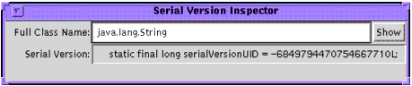

| Contents | Previous | Next | JavaTM Object Serialization Specification |
The ObjectStreamClass provides information about classes that are saved in a Serialization stream. The descriptor provides the fully-qualified name of the class and its serialization version UID. A SerialVersionUID identifies the unique original class version for which this class is capable of writing streams and from which it can read.
package java.io;
public class ObjectStreamClass
{
public static ObjectStreamClass lookup(Class cl);
public String getName();
public Class forClass();
public ObjectStreamField[] getFields();
public long getSerialVersionUID();
public String toString();
}
The lookup method returns the ObjectStreamClass descriptor for the specified class in the virtual machine. If the class has defined serialVersionUID it is retrieved from the class. If the serialVersionUID is not defined by the class, it is computed from the definition of the class in the virtual machine. If the specified class is not serializable or externalizable, null is returned.
The getName method returns the fully-qualified name of the class. The class name is saved in the stream and is used when the class must be loaded.
The forClass method returns the Class in the local virtual machine if one was found by ObjectInputStream.resolveClass method. Otherwise, it returns null.
The getFields method returns an array of ObjectStreamField objects that represent the serializable fields of this class.
The getSerialVersionUID method returns the serialVersionUID of this class. Refer to Section 4.6 "Stream Unique Identifiers.” If not specified by the class, the value returned is a hash computed from the class’s name, interfaces, methods, and fields using the Secure Hash Algorithm (SHA) as defined by the National Institute of Standards.
The toString method returns a printable representation of the class descriptor including the name of the class and the serialVersionUID.
ObjectStreamClass descriptors are also used to provide information about dynamic proxy classes (e.g., classes obtained via calls to the getProxyClass method of java.lang.reflect.Proxy) saved in a serialization stream. A dynamic proxy class itself has no serializable fields and a serialVersionUID of 0L. In other words, when the Class object for a dynamic proxy class is passed to the static lookup method of ObjectStreamClass, the returned ObjectStreamClass instance will have the following properties:
The serialized form of an ObjectStreamClass instance depends on whether or not the Class object it represents is serializable, externalizable, or a dynamic proxy class.
When an ObjectStreamClass instance that does not represent a dynamic proxy class is written to the stream, it writes the class name and serialVersionUID, flags, and the number of fields. Depending on the class, additional information may be written:
String.compareTo. For details of the format, refer to Section 6.4 "Grammar for the Stream Format”.When an ObjectOutputStream serializes the ObjectStreamClass descriptor for a dynamic proxy class, as determined by passing its Class object to the isProxyClass method of java.lang.reflect.Proxy, it writes the number of interfaces that the dynamic proxy class implements, followed by the interface names. Interfaces are listed in the order that they are returned by invoking the getInterfaces method on the Class object of the dynamic proxy class.
The serialized representations of ObjectStreamClass descriptors for dynamic proxy classes and non-dynamic proxy classes are differentiated through the use of different typecodes (TC_PROXYCLASSDESC and TC_CLASSDESC, respectively); for a more detailed specification of the grammar, see Section 6.4 "Grammar for the Stream Format”.
An ObjectStreamField represents a serializable field of a serializable class. The serializable fields of a class can be retrieved from the ObjectStreamClass.
The special static serializable field, serialPersistentFields, is an array of ObjectStreamField components that is used to override the default serializable fields.
package java.io;
public class ObjectStreamField implements Comparable {
public ObjectStreamField(String fieldName, Class fieldType);
public ObjectStreamField(String fieldName, Class fieldType,
boolean unshared);
public String getName();
public Class getType();
public String getTypeString();
public char getTypeCode();
public boolean isPrimitive();
public boolean isUnshared();
public int getOffset();
protected void setOffset(int offset);
public int compareTo(Object obj);
public String toString();
}
ObjectStreamField objects are used to specify the serializable fields of a class or to describe the fields present in a stream. Its constructors accept arguments describing the field to represent: a string specifying the name of the field, a Class object specifying the type of the field, and a boolean flag (implicitly false for the two-argument constructor) indicating whether or not values of the represented field should be read and written as “unshared” objects if default serialization/deserialization is in use (see the descriptions of the ObjectInputStream.readUnshared and ObjectOutputStream.writeUnshared methods in sections 1.1 and 1.1, respectively).
The getName method returns the name of the serializable field.
The getType method returns the type of the field.
The getTypeString method returns the type signature of the field.
The getTypeCode method returns a character encoding of the field type (‘B’ for byte, ‘C’ for char, ‘D’ for double, ‘F’ for float, ‘I’ for int, ‘J’ for long, ‘L’ for non-array object types, ‘S’ for short, ‘Z’ for boolean, and ‘[‘ for arrays).
The isPrimitive method returns true if the field is of primitive type, or false otherwise.
The isUnshared method returns true if values of the field should be written as “unshared” objects, or false otherwise.
The getOffset method returns the offset of the field’s value within instance data of the class defining the field.
The setOffset method allows ObjectStreamField subclasses to modify the offset value returned by the getOffset method.
The compareTo method compares ObjectStreamFields for use in sorting. Primitive fields are ranked as “smaller” than non-primitive fields; fields otherwise equal are ranked alphabetically.
The toString method returns a printable representation with name and type.
The program serialver can be used to find out if a class is serializable and to get its serialVersionUID. When invoked with the-show option, it puts up a simple user interface. To find out if a class is serializable and to find out its serialVersionUID, enter its full class name, then press either the Enter or the Show button. The string printed can be copied and pasted into the evolved class.

When invoked on the command line with one or more class names, serialver prints the serialVersionUID for each class in a form suitable for copying into an evolving class. When invoked with no arguments, it prints a usage line.
Each versioned class must identify the original class version for which it is capable of writing streams and from which it can read. For example, a versioned class must declare:
The stream-unique identifier is a 64-bit hash of the class name, interface class names, methoit is strongly recommended thatds, and fields. The value must be declared in all versions of a class except the first. It may be declared in the original class but is not required. The value is fixed for all compatible classes. If the SUID is not declared for a class, the value defaults to the hash for that class. Serializable classes do not need to anticipate versioning; however, Externalizable classes do.
The initial version of an Externalizable class must output a stream data format that is extensible in the future. The initial version of the method readExternal has to be able to read the output format of all future versions of the method writeExternal.
The serialVersionUID is computed using the signature of a stream of bytes that reflect the class definition. The National Institute of Standards and Technology (NIST) Secure Hash Algorithm (SHA-1) is used to compute a signature for the stream. The first two 32-bit quantities are used to form a 64-bit hash. A java.lang.DataOutputStream is used to convert primitive data types to a sequence of bytes. The values input to the stream are defined by the Java™ Virtual Machine (VM) specification for classes.
The sequence of items in the stream is as follows:
<clinit>, in UTF encoding.java.lang.reflect.Modifier.STATIC, written as a 32-bit integer.()V, in UTF encoding.<init>, in UTF encoding.sha, the hash value would be computed as follows:
long hash = ((sha[0] >>> 24) & 0xFF) |
((sha[0] >>> 16) & 0xFF) << 8 |
((sha[0] >>> 8) & 0xFF) << 16 |
((sha[0] >>> 0) & 0xFF) << 24 |
((sha[1] >>> 24) & 0xFF) << 32 |
((sha[1] >>> 16) & 0xFF) << 40 |
((sha[1] >>> 8) & 0xFF) << 48 |
((sha[1] >>> 0) & 0xFF) << 56;
| Contents | Previous | Next | JavaTM Object Serialization Specification |
Copyright © 2003 Sun Microsystems, Inc. All rights reserved.